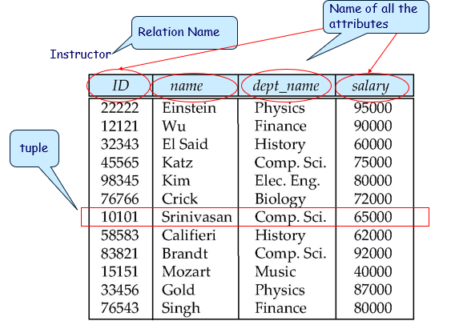
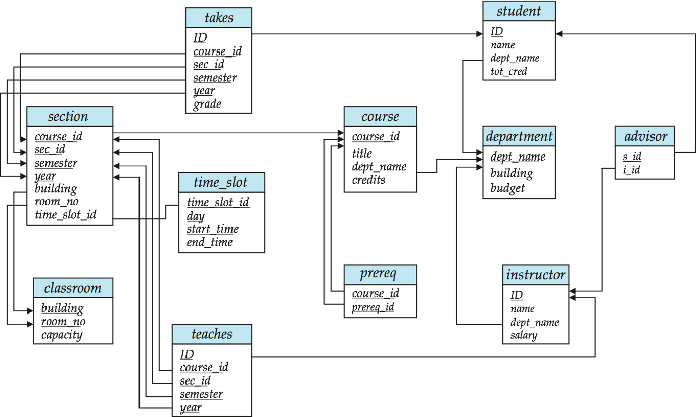
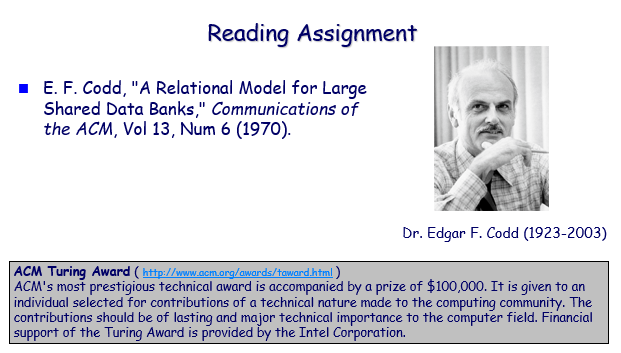

数据库｜关系模型
关系模型介绍
关系数据库的结构
- 关系数据库由 表(table) 的集合构成，每个表有
唯一的名字- 每个关系(relation)有名字(relation name)，便于访问和区别不同的关系
- 每个关系可以看做一张二维表，表达了一个数据对象或者数据和数据之间的关系
- 每一列表示数据的属性(attributes)，用名字区分
- 每一行是一个数据记录，也可称作元组(tuple)
- 关系实例(relation instance) 表示一个关系的行，也就是所包含的一组将定的行

- 属性(attributes)
- 对于关系的每个属性，都存在一个允许取值的集合，称为该属性的 域(domain)
- 对于所有的关系 r 而言，r 的所有属性的域都是 原子的(atomic)
- 空(null) 值是一个特殊的值，表示值未知或不存在
数据库模式(schema)
- 数据库模式(database schema) 是数据库的逻辑设计
- 数据库实例(database instance) 是给定时刻数据库中数据的一个快照
- 数据库模式的规范表达：
- A1, A2, …, An 是属性
- R = (A1, A2, …, An) 是一个属性的模式
- 例如：instructor = (ID, name, dept_name, salary)
- 更普遍地，给定集合D1, D2, …, Dn , 关系 r 是D1 x D2 x … x Dn 的子集。因此, 一个关系是一个n元组的集合 (a1, a2, …, an) ，每个ai Di
- 关系 r中的一个元素t就是一个元组，一个记录，一行
- 关系是无序的
- 元组的顺序无关紧要（元组可以按任意顺序存储）
- 记录无序，属性无序
码(Keys)
一个元组的属性值必须是能够
唯一区分元组的
- 假设 K R，R 是所有属性的集合
- K 是 超码(superkey) ，那么 K 的取值足以唯一确定 R 的每一个可能的记录
- 超码中可能包含无关紧要的属性
- 如果 K 是一个超码，则 K 的任意超集也是超码
- 对于某些超码，它们的任意真子集都不能成为超码时，这样的
最小超码就是 候选码(candidate key) - 主码(primary key) 代表被选中的，主要用来在一个关系中区分不同元组的
候选码- 主码的选择必须慎重，应该选择那些
值从不或缺少变化的属性
- 主码的选择必须慎重，应该选择那些
- 一个关系模式 r1 可能在它的属性中包括另一个关系模式 r2 的
主码，这个属性在 r1 上称作参照 r2 的 外码(foreign key)- 关系 r1 称为外码依赖的 参照关系(referencing relation)
- 关系 r2 称为外码依赖的 被参照关系(referenced relation)
- 外码是一种数据的 参照完整性约束(referential integrity constraint)
- K 是 超码(superkey) ，那么 K 的取值足以唯一确定 R 的每一个可能的记录
模式图(schema diagram)
- 一个含有主码和外码依赖的数据库模式可以用模式图来表示

关系查询语言
Relational Query Languages
- 查询语言是用户用来从数据库中请求获取信息的语言
- 过程化语言(procedural) 中用户指导系统对数据库执行一系列操作以计算出所需结果
- 非过程化语言(nonprocedural) 中用户只需描述所需信息，而不用给出获取该信息的具体过程
关系运算
- 关系运算的结果仍然是关系
数据库查询
-
, 选择
- select 操作选择满足给定谓词的元组
- 表示方法：
- p 称为选择谓词
- 选择谓词中可以使用
- 可以通过使用连接词将多个谓词组合成一个更大的谓词
-
, 投影
- 对输入的关系的所有行输出指定的属性，从输出中去除重复元组
- 表示方法：
关系代数运算的结果是关系 ，因此关系代数运算可以组合成关系代数表达式。不是将关系的名称作为投影运算的参数，而是给出一个计算结果为关系的表达式
例如：
-
, 笛卡尔积
- 从两个输入关系中输出所有的元组对
- 表示方法：
- 可以通过以下表达实现 连接(join) 操作
-
, 自然连接
- 从两个输入关系中输出这样的元组对： 它们在具有相同名字的所有属性上取值相同
-
, 并
- 输出两个输入关系中元组的并
- 表示方法：
- 要使 合法：
- r, s 必须有相同数量的属性
- 属性域必须兼容
-
, 交
- 查找位于两个输入关系中的元组
- 表示方法：
- 合法要点同上
-
, 差
- 查找在一个关系中但不在另一个关系中的元组
- 表示方法：
- 合法要点同上
-
, 赋值
- 将关系代数表达式的一部分分配给
临时关系变量，类似编程语言中的赋值
- 将关系代数表达式的一部分分配给
-
, 重命名
- 提供一个可以用来引用关系代数表达式的结果的名称
- 表达式：
- 返回名称为 x 的表达式 E 的结果
- 也可以表达为：
数据库修改
-
删除
- 删除请求的表示方式与查询类似，只是不是向用户显示元组，而是从数据库中删除选定的元组
- 只能删除整个元组;无法仅删除特定属性上的值
- 关系代数表示为：
- 其中 r 是关系，E 是关系代数查询
-
插入
- 要将数据插入关系中，我们要么
- 指定要插入的元组
- 编写一个查询，其结果是要插入的一组元组
- 关系代数表示为：
- 其中 r 是关系，E 是关系代数查询
- 要将数据插入关系中，我们要么
-
更新
- 用于更改元组中的值而不对元组中的所有值 charging
- 关系代数表示为：
- 每个 Fi 要么是
- r 的第 i 个属性，如果这个属性未更新
- 如果要更新属性，Fi 是一个表达式，仅涉及常量和 r 的属性，这为属性提供了新值
- 在关系代数中编写查询的方法不止一种。

本博客所有文章除特别声明外，均采用 CC BY-SA 4.0 协议 ，转载请注明出处！